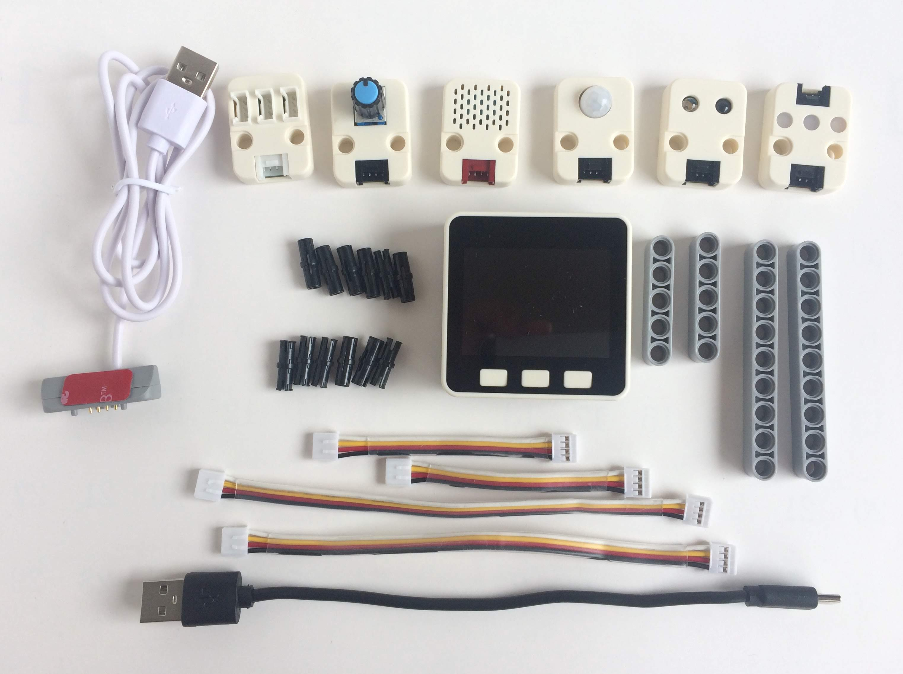

M5Stackを開発しているM5Stack.comから新しく「M5GO Iot Starter Kit」がでました。
「AmbientでIoTをはじめよう」の第9回は、このキットを使って温度などを測り、Ambientに送って可視化してみます。
M5GO IoT Starter Kit

本体はM5Stack Grayモデルに近いもので、ESP32と9軸加速度センサーが搭載されています。
M5Stack BasicやGrayには、ケース底面近くにBUS PORTとI/O PORTと呼ばれるスロットがありますが、M5GOにはありません。
その代りにGroveポートが三つ、LEDバーが二つついています。
キットにはENV(温湿度・気圧)センサ、IR REMOTE(赤外線モジュール)、RGB LEDモジュール、モーションセンサ、
Angle(角度)センサ、GroveハブとGroveケーブル、充電ケーブル、Type CのUSBケーブルなどが含まれています。
M5Stack Basic、GrayとM5GO本体を比較すると次のようになります。
M5Stack Basic / Gray / M5GO 比較表
| Basic | Gray | M5GO |
|---|
| 搭載チップ | ESP-WROOM-32 |
| 搭載LCD | 320 x 240 カラーTFT LCD |
| USB Type C | ✓ | ✓ | ✓ |
| 内蔵スピーカ | ✓ | ✓ | ✓ |
| 内蔵マイク | | | ✓ |
| BUS PORT, I/O PORT | ✓ | ✓ | |
| Groveポート | 1 | 1 | 3 |
| microSDスロット | 1 | 1 | 1 |
| 9軸IMU | | ✓ | ✓ |
| LEDバー | | | ✓ |
| 内蔵電池 | 3.7 V / 150 mAh | 3.7 V / 550mAh寸法 |
| 寸法 | 54 x 54 x 17 mm | 54 x 54 x 21 mm |
M5GO IoT Starter Kitのセットアップは「M5GOのセットアップから使い方いろいろ」に詳しく書かれているので、
そちらを見ながらセンサーユニットなどの動作確認やネットワークの設定をおこなってください。
開発環境の設定
USBドライバーのインストール
M5GOはMicropython用のファームウェアがインストールされており、Micropythonでプログラムを書きます。
開発用ポータルサイトの「Live Code」というページからMicropythonのプログラムを入力し、ページ右下の△のボタンを押すと、
プログラムがWi-Fi経由でM5GOに送られ、実行されます。デモプログラムや簡単なプログラムを動かすなら開発環境の準備は不要です。
しかし、プログラム開発時につきもののエラーメッセージやprint()文はUSB接続したシリアルポートに出力されますし、
MicropythonライブラリーをM5GOにインストールする時にもシリアルポートを使います。
そこで、M5Stackと通信するためのUSBドライバをインストールします。
パソコンにUSBドライバ「SiLabs CP2104 Driver」
をダウンロードしてインストールしてください。
M5GOのファームウェア更新
「M5GOのセットアップから使い方いろいろ」
のM5GOのファームウェアを最新のものに更新する手順で「Flash Download Tools」をダウンロードするとあります。
このツールは2018年8月現在、Windows版のみが提供されています。
Windows以外のプラットフォームをお使いの方は次の手順でファームウェアの更新ができます。
- M5GOのリポジトリをクローンするか、ZIPファイルをダウンロードして展開する。
- ターミナル画面で次のようにコマンドを実行する。
2-1. esptoolがインストールされていなければ、インストールする。
$ sudo pip install esptool
2-2.ダウンロードしたファイルのfirmware/{最新版}/にいき、M5GOのFLASHを消去して、最新版のファームウェアを書き込む。
$ cd M5GO/firmware/{最新版}/
$ esptool.py --chip esp32 --port /dev/tty.SLAB_USBtoUART erase_flash
$ ./flash.sh
- M5GOをリセットする
- ファームウェアを更新するとWi-Fiの設定がクリアされるので、再度設定する
M5GOとのファイル転送ツールの準備
キットに同梱されているセンサーユニットなどをアクセスするライブラリーは
インストール済みですが、それ以外のMicropythonライブラリーをインストールするためには
ライブラリーをM5GOに転送する必要があります。
PC上のファイルをM5GOに転送するのはampyというコマンドが便利です。 ampyコマンドのインストールと使い方は「ampy: MicroPythonマイコンとPCとのファイル転送ツール
https://ambidata.io/blog/2018/03/15/ampy/
」をご覧ください。
ampyを使う時は環境変数AMPY_PORTにM5GOを接続しているUSBシリアルのデバイスを指定しておくと便利です。M5GOのファイルは /flash というディレクトリーの下に置かれています。
$ export AMPY_PORT=/dev/tty.SLAB_USBtoUART
$ ampy ls /flash
utils.mpy
wificonfig.mpy
res
boot.py
m5stack.mpy
img
examples
M5GO.mpy
lib
wifisetup.mpy
fonts
wificonfig.json
_main.py
## Ambientライブラリーのインストール
MicropythonでデーターをAmbientに送信するライブラリーはGithubに公開してあります。
・ambient-python-lib
https://github.com/AmbientDataInc/ambient-python-lib
このサイトからZIPファイルをダウンロードして展開し、その中のambient.pyをampyコマンドでM5GOに転送します。
$ ampy put ambient.py
これでM5GOのMicropythonプログラムからambientライブラリーがimportできるようになります。
# Angleセンサーの値をAmbientに送信する
最初に動作確認も兼ねて、Angleセンサーの値を読み取り、5秒毎にAmbientに送信してみます。
m5go_angle.jpg
Angleセンサーはツマミの角度に応じて0.0から100.0までの値が読めるセンサーです。
Micropythonでは次のようにANGLEクラスのインスタンスを作り、read()することでその時のツマミの角度に応じた値が読めます。インスタンスを作るとGroveポートBに対応したピンが確保されます。プログラム終了時にはdeinit()を呼び、確保されているピンを開放します。
import units
angle = units.ANGLE() # Angleセンサーのインスタンスを作る
lcd.print(angle.read()) # Angleセンサーの値を読み、
angle.deinit()
Ambientを使うにはユーザー登録(無料)が必要です。詳細は「Ambientを使ってみる
https://ambidata.io/docs/gettingstarted/
」をご覧ください。
Ambientに値を送信するには、チャネルIDとライトキーを指定してAmbientのインスタンスを作り、
send()で値を送ります。
import ambient
am = ambient.Ambient(チャネルID, 'ライトキー')
r = am.send({'d1': 値})
r.close()
Angleセンサーの値を読み、値に応じてLCDに棒グラフを描き、5秒毎にその時の値をAmbientに送るプログラムは次のようになります。M5StackやM5GOで提供されているLCDなどのMicropythonのAPIは「
M5Stack Web IDEのMicroPython API
https://github.com/m5stack/M5Cloud/blob/master/README_JP.md#micropython-api
」で見られます。
32行目のwhileループの中でAngleセンサーを読み、前回から5秒以上経過していたら、値をAmbientに送信します(40行目)。Angleセンサーの値に応じて44行目から47行目でLCDに棒グラフを描いています。
プログラム中のAmbientのチャネルIDとライトキーをご自分のものに変更し、開発用ポータルサイトの「Live Code」ページに貼り付け、ページ右下の△のボタンを押すと、プログラムが実行されます。
この時、M5GOをパソコンにUSB接続し、パソコン側でCoolTermなどの通信プログラムかcuコマンドなどを動かしておくと、エラーメッセージやprint()文の出力を見られます。
Angleセンサーのツマミを回し、動作を確認してみてください。
# ENVセンサーとモーションセンサーで人の動きと室温、湿度を調べる
温湿度と気圧が測れるENVセンサーと人などの動きが検知できるモーションセンサーを使い、
人の動きと室温、湿度を合わせて調べてみます。
例えば寝室の室温、湿度と寝返りなどの動きを調べるといった使い方が考えられます。
m5go_env_pir.jpg
ENVセンサーにどんなセンサーが使われているか、資料は見つけられないのですが、
センサーユニットをアクセスするunitsライブラリー
https://github.com/m5stack/M5GO/blob/master/lib/units.py
を見ると、温度と気圧にはBMP280が、湿度にはDHT12というセンサーが使われています。
ENVセンサーのライブラリーには次のようなメソッドが用意されています。
import units
env = units.ENV() # ENVセンサーのインスタンスを作る
env. available() # ENVセンサーがI2Cバスにつながっているかどうかを調べる
t = env. temperature() # 温度を測る(℃の温度が返る)
h = env. humidity() # 湿度を測る(%の値が返る)
p = env. pressure() # 気圧を測る(hPaの値が返る)
t, p, h = env. values # 温度、気圧、湿度を測る
モーションセンサー(PIRセンサー)はPassive Infrared Ray、受動型赤外線センサーと呼ばれるもので、人などが発する赤外線の変化を検知するセンサーで、人感センサーとも呼ばれます。人の動きに応じて照明をオン/オフするセンサーなどに使われています。
次のようなメソッドが用意されていますが、この記事を書いた2018年8月時点でcallback()はエラーになってしまいます。M5Stack.com社に伝えたので修正されると思います。
import units
pir = env.PIR() # PIRセンサーのインスタンスを作る
pir.read() # PIRセンサーの値を読む
pir.callback(cb) # PIRセンサーの値が変化した時に呼ばれるコールバック関数を設定するが、
# 今はエラーになる
そこで代わりに次のようなクラスを定義しました。
class PIR():
def __init__(self, handler=None):
self.pin = Pin(units.PORTB[1], Pin.IN, handler=handler, trigger=(Pin.IRQ_RISING | Pin.IRQ_FALLING), debounce=100)
def read(self):
return self.pin.value()
def deinit(self):
self.pin.init(handler=None, trigger=Pin.IRQ_DISABLE)
このように使います。
pir = PIR(handler=cb) # PIRセンサーのインスタンスを作り、コールバック関数を設定する
pir.read() # PIRセンサーの値を読む
コールバック関数は引数としてGPIOのPinオブジェクトが渡されます。
irqvalue()で関数が呼ばれたときのセンサー値を得られます。
def cb(pin): # PIRのコールバック関数
val = pin.irqvalue() # 割り込み時点のピンの値を取得
この二つのセンサーを使い、5分間の人の動きの回数と5分毎の温度、湿度、気圧を測り、
Ambientに送るプログラムを作りました。
12行目からの関数がPIRの値が変化した時に呼ばれるコールバック関数です。
PIRの値は、赤外線を発する物体を検知したら1になり、一定時間すると0に戻ります。
nmovesというグローバル変数を用意し、コールバック関数が呼ばれてPIRの値が0でなければ
nmovesを1増やしています。
45行目でPIRのインスタンスを作る時にコールバック関数を指定しています。
56行目からのwhileループで5分毎に温度、湿度、気圧を測定し、そこまでの
動いた数(nmoves)と合わせてAmbientに送っています(66行目)。
M5GOを枕元に置いて、寝ているときの体の動きと寝室の室温、湿度を測ろうとしました。
LCDをclear()してもデフォルトだと画面はかなり明るく光っています。
そこでdarkというフラグを用意し(8行目)、それをTrueにするとsetBrightness(0)でLCDが光らないようにしています(51行目)。さらにボタンCで表示をオン/オフできるようにしました。
Angleセンサーのサンプルと同じように、プログラム中のAmbientのチャネルIDとライトキーをご自分のものに変更し、開発用ポータルサイトの「Live Code」ページに貼り付け、ページ右下の△のボタンを押すと、プログラムが実行されます。
M5GOを枕元に置いて、一晩測定してみた結果です。
scsho1.jpg
左上が室温、右上が湿度、左下が気圧、右下は10分間毎の動きの回数です。私の場合、一晩中もぞもぞ動いているようです。眠りが浅いのかもしれません。
# まとめ
M5GO IoT Starter Kitは、キットに含まれているのはENV(温湿度・気圧)センサー、IR REMOTE(赤外線モジュール)、RGB LEDモジュール、モーションセンサー、Angle(角度)センサー、Groveハブの六つのユニットですが、インタフェースはGroveなので、Groveの豊富なセンサー類が使えます。はんだ付け不要で、Micropythonでプログラミングできるので、IoTの入門としては使いやすいキットだと思います。
この記事はアンビエントデーターの下島が担当しました。